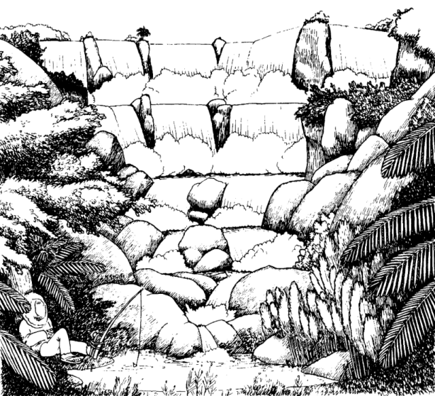

分散层叠算法学习笔记
update：我收回一切关于这东西常数大的言论。
0 前言
本文学习自 蒋明润 的集训队论文 《浅谈利用分散层叠算法对经典分块问题的优化》。具体内容不一定与论文完全有关，可能会穿插自己的理解和其它博客的说明。
1 简要概述
1.1 简介
分散层叠算法（外文名叫 Fractional Cascading）是一种在 OI 中应该并不普及的算法，但它可以处理不少奇奇怪怪的问题，而且应该有比较明显的优化效果。
我们看它的英文名就大概可以了解它大概是一个什么算法，大概适用于什么范围：
- Fractional ，译为 “分散的，零散的” ，可见我们是对于多个问题进行相似的处理。（是不是想到了什么）
- Cascading ，译为 “层叠，串联” ，百度翻译上还有一个翻译叫 “阶级式渗透” ，我觉得这个东西就非常的形象。
没错，这个算法大概的作用就是 “把一堆零散的信息进行阶级式渗透” ，然后得到最终的结果。
可以看看这个算法的提出者 Chazelle 和 Guibas 给的一张图，以及论文中给出的说明：
“它相当形象地揭示了这个名词背后的深刻含义：像瀑布一样从高到低逐渐分散成越来越细的支流,再层层叠叠地覆盖。”
—— 蒋明润 《浅谈利用分散层叠算法对经典分块问题的优化》

好吧这么说也没什么用，那我们来看一道例题吧。
1.2 举例说明
例1：Luogu P6466 分散层叠算法(Fractional Cascading)
【简要题意】
给出 $k$ 个长度为 $n$ 的 有序数组 ，$q$ 个查询，每次求出 每个数组 中大于等于 $x$ 的最小的数。
要求 强制在线、$O(nk)$ 空间 。
$1 \le k \le 100, 1 \le n \le 1e4, 1 \le q \le 5e5$ 。
【解法】
首先我们有一个 $O(kq\log n)$ 的常用解法，就是每一个序列都二分一次，这样可以做到线性空间，但时间上显然无法通过本题的数据范围。
还有一种做法就是把所有序列合并成一个长度为 $nk$ 的序列，然后在这个大序列里面二分，并且对于每一个位置维护这个位置往后的 每一个序列的后继 。
这样时间上是单次 $O(k+\log n)$ ，但是空间 $O(k^2n)$ 显然会炸。
这时我们就要用到这个神奇的分散层叠算法了，它可以用 $O(k+\log n)$ 的时间解决一次询问，同时只需要 $O(nk)$ 的预处理时间，并且支持强制在线和 $O(nk)$ 空间。
首先我们把这 $k$ 个序列称为 $a_1, a_2, \dots a_k$ 。
我们再设 $k$ 个序列 $b_1, b_2, \dots b_k$，其中 $b_1=a_1$ 。
然后我们用这样的方法构造后面的序列：
- 对于一个序列 $b_i(i>1)$ ，我们取出序列 $a_i$ 和 $b_{i-1}$ ，并且取出 $b_{i-1}$ 的所有 偶数位 上的数（即 $b_{i,2}, b_{i,4}, \dots$ ）构成序列 $b_{i-1}'$ 。
- 然后我们 归并排序 $a_i$ 和 $b_{i-1}'$ ，就得到了新的 $b_i$ 。
- 我们在归并排序的同时，维护出每一个元素在 $a_i$ 与 $b_{i-1}'$ 的后继在 当前的 $b_{i-1}$ 序列中 的下标，这显然可以随着归并排序一起维护。
最后我们查询的时候，在 $b_k$ 里面二分就行了。一方面对于无解即没有后继的情况需要特判，否则该元素在 $a_k$ 中的后继就是我们查询的数 $x$ 在 $a_k$ 中的后继。但是这样不能直接得出这个数在 $b_{k-1}$ 中的后继的具体位置，不过不难发现，我们要得到的具体位置与我们已知的位置差距不会超过 $1$ ，所以我们可以直接暴力处理。
于是我们得到了这个数在 $b_{k-1}$ 中的位置，然后就可以用同样的方式求解了，并且不难发现，除了第一次二分以外，我们剩下的询问都是 $O(1)$ 的，故单次询问复杂度 $O(k+\log n)$ 。
然后是预处理的时空复杂度的问题，不难发现每个序列最终对序列总长度的贡献就是其对时空复杂度的贡献，具体时间为什么是这样可以考虑我们用的是归并排序。然后我们不难发现，我们由于序列长度每次缩小一般后扔到第二个序列中，故每一个原序列的贡献的系数不会超过 $2$ ，故每一个序列是 $O(n)$ 的，那么我们就达到了总体复杂度 $O(nk)$ 。而且不难发现这样常数应该不会很大，是一个十分优秀的算法。
1.3 普遍情况
考虑给你一个 DAG ，每个点度数不超过常数 $d$ ，然后每一个点上有一个序列 $a$ ，每次查询 一条链上的每一个点所对应的序列中，某个数的后继 。
所以我们刚才的问题可以看成 $d=2$ ，然后 DAG 是一条链的特殊情况，那么现在这个问题就是其推广。
解法类似，读者可以自行思考，答案如下：
具体解法
其实直接把刚才的 “取序列的 $1\over 2$ （也就是所谓偶数位）拿过来归并” 换成 “取 $1\over d$ 拿过来归并” 就行了。这样的话我们每一次查完之后与 具体位置的差距 就是一个 $d$ 。由于 $d$ 是一个 常数 ，这里仍然是 $O(1)$ 查询的。 这样一来对于长度为 $k$ 的路径，单次查询复杂度就是 $O(k+\log n)$ 的，于是解决了这个问题。1.4 Bouns
这里是作者的一些思考，可能会出现问题。但是后文中确实用到了（（（
我们不难发现我们主要利用的是一种 类似于误差或扰动 的方法来处理这个问题，最初的问题中这个 扰动 是 $1$ 。那么我们大胆猜想这个扰动可以更大。
比如说我们设这个扰动的阈值为 $p$ ，表示我们从序列中取出 $1\over p$ 的元素扔到分散层叠中。
显然这部分扰动的查询应该可以做到 $O(\log p)$ 单次，合起来就是 $O(k\log p)$ 单次。但是我们这个 $p$ 显然可以取到很小，比如取到 $1$ 时总复杂度就是 $O(k)$ 。
那我们加上这个扰动好像就可以减少元素个数了，我们先每个序列取出 $1\over p$ ，然后跑一遍普通的分散层叠算法，最后用 $\log p$ 的时间扰动再得出具体的二分结果就行了。
这样可以直接把预处理时间复杂度优化到 $O({nk\over p})$ ，但是每次查询会在 $k$ 上面多一个 $\log p$ ，这或许可以在某些地方起到均摊复杂度的作用（这个暗示很明显了吧）。
你会意识到这空间复杂度根本没法优化，具体原因懒得解释应该是个人都懂。
1.5 扩展
论文当中提到这东西可以解决 “ $O(\log n)$ 插入一个数然后 $O(k\log \log n+\log n)$ 查询” 的问题，论文里面没详细说，那我也就不写了。
可能和上面的 Bouns部分 有点关系？
2 扩展应用
虽然这个算法看起来好像不太能扩展，但是其实这个算法很有推广的空间。
这东西是不是有点像 多块二分 ？于是我们考虑其与分块的联系。
论文里面给出了几个例题，那我们也一起看一下。
2.1 区间加区间 rank
不难想到一种时空均为 $O(n\sqrt{n})$ 的序列分块套值域分块的做法。
然后论文中还有一种线性空间的离线算法，其实就是把两次重构间的所有询问离线下来然后 基排+单调性 做到一只根号，但是和本文没什么关系就不多说了。
我们考虑另一种看起来更劣但很有前途的做法：多块二分。
我们不难发现这东西可以做到 在线+空间线性 ，不过时间复杂度比较劣，为 $O(n\sqrt{n\log n})$ 。
我们发现我们刚才的优化其实做到了把 $O(k\log n)$ 优化到了 $O(k + \log n)$ ，那我们大胆猜想一下，我们是不是对于这道题也可以这么搞，然后优化成 $O(n\sqrt n + n\log n)$ 呢？
先不急，我们一步一步来。
2.1.1 $O(n\sqrt{n\log\log n})$ solution
原文中把这个东西开到了第三部分 ，我也不知道为什么（（
我们还是考虑对序列分块，然后用类似分散层叠的方法进行复杂度的优化。
如果单纯的分块好像不是很能在里面套一个分散层叠算法，所以我们考虑利用 1.4 节 中那个方法进行均摊。
我们设块长为 $b$，然后扰动阈值为 $p$ 。
首先我们考虑设一个新的阈值 $q$ 表示对于每 $q$ 个块我们建立一个 1.4 节 中的分散层叠，即每个块取出 $1\over p$ 来跑分散层叠算法。
然后我们分析各部分复杂度。
首先我们这样需要建立 $O({n\over bp})$ 个分散层叠。对于修改，我们每一次重构 $O(1)$ 个，显然重构一个的复杂度就是预处理复杂度，为 $O({bq\over p})$ ，剩下的显然可以 $O(1)$ 打标记；对于查询，我们直接跑就行了，复杂度 $O({n\over b}\log p + {n\over bq}\log b)$ 。
然后是不在分散层叠中的整块，不难发现分散层叠可以处理 只取部分 的问题，所以与上一部分复杂度一样。
最后是散块，有手就行 $O(b)$ 。
最终复杂度是这么个玩意：
不难发现这一个表达式里面有 $3$ 个我们可以自由变动的常量，于是现在我们需要疯狂设阈值来均摊这个复杂度（（
我们取 $b=\sqrt{n\log \log n}, p=q=\log n$ 就得到了 $O(\sqrt{n\log \log n})$ 的复杂度。
当然是不是这种解法下的最优复杂度我就不知道了。
2.1.2 $O(n\sqrt{n})$ solution
我们意识到我们优化分块一般用的都是 polylog 的结构，于是我们选用线段树。
我们对于分好的块建线段树，然后每一个 非叶子节点 维护两个儿子的 部分归并结果 。我们设扰动阈值为 $p$ ，即对于每一个子节点，我们提取其 $1\over p$ 然后与另一个子节点合并到父亲中，那么一个非叶子节点的序列长度为 $2\over p$ 。
于是我们修改的时候，显然只在修改到 块 的时候需要重构，那么我们在线段树上相当于两个单点修改，涉及到的元素为一个叶子节点到跟路径上序列长度之和，显然一次重构的复杂度也是这个，考虑序列长度之和就是 $O(b\sum_i ({2\over p})^i)$ ，我们注意到取 $p=2$ 时这东西带一只 $\log$ ，但神奇的是， $p=3$ 时这个式子就是 $O(b)$ 了，故我们需要 $p > 2$ 。
一通分析居然直接削掉一只老哥
然后就是查询，现在在根里面二分一次之后子节点什么的都出来了，唯一的与线段树的不同点在于，这里每一个点都必须要扫完其在区间内的子树，这个应该自行理解不难。
反正最后扫到的就是 $O({n\over b})$ 个整块和 $O(b)$ 的散块，加一个 $O(\log n)$ 的二分。
显然我们这里 $p$ 取得越小越好，但是根据上文的分析 $p > 2$ ，我们取 $3$ 。
那么最终一次操作的复杂度就是 $O(b+{n\over b}+\log n)$ ，显然取 $b=\sqrt{n}$ ，最终总复杂度就是 $O(n\sqrt{n} + n\log n)$ ，直接写成 $O(n\sqrt{n})$ 好了。
而且不难发现空间复杂度是 $O(n)$ 的。
2.2 区间加区间最大值小于某数的子区间个数
你会发现这东西严格加强了第十分块。
然而我连第十分块都不会
不过这道题还是可以做的。
首先我们发现这种 “大于、小于” 的操作像极了二分可以处理的东西，因此我们考虑怎么二分，然后再用分散层叠算法去优化掉一只 $\log$ 。
首先我们必然要分块，设块长为 $b$ ，我们首先考虑不带修怎么做：
显然答案为 相邻两个 $> x$ 的数之间的区间 中的所有子区间个数之和，于是我们维护出一个 后缀信息 ，表示对于一个 后缀 的块内答案和左右两边剩余部分的信息，这部分的空间显然是 $O(n)$ 的。
那么这种多块的二分我们就可以用 线段树套分散层叠 优化到一只根号。
然后考虑修改，显然除了散块重构都与上面同理，然后不难发现散块的重构可以做到 $O(b)$ 。具体怎么对于一个排序的数组 $O(b)$ 维护其有序性就不赘述了，我们只需要考虑怎么 $O(b)$ 根据一个块排好序之后的数组来重构后缀信息。
这个用类似链表的结构可以比较方便地维护，最终显然取 $b=\sqrt{n}$ ，时间复杂度 $O(n\sqrt{n})$ ，空间复杂度 $O(n)$ 。
2.3 区间加区间最大子段和
然而我也不会第六分块
同样先考虑第六分块的点名被卡的带 $\log$ 做法。
首先我们设 $f(x)$ 表示对于一个序列，其 整体 $+x$ 之后的答案，不难发现这是一个分段函数形成的凸包。
然后我们对序列分块，块长为 $b$ ，然后 对于一个块建线段树 ，显然这里可以用闵可夫斯基和来合并，一次合并复杂度为这个节点的序列长度 $O(len)$ 。
不难发现每一个位置的贡献为 $\log b$ ，所以对于一个块来说，预处理复杂度 $O(b\log b)$ 。
不难发现我们可以非常方便地通过打 tag 对线段树上的被 完全覆盖 的点进行修改（因为其结构不变）。
然后考虑散块修改的部分，我们用暴力重构一个块的 $O(b\log n)$ 的复杂度就太逊了，我们需要优化这个过程。不难发现我们事实上是对于散块进行了一次区间加，那么每一层被修改的点数都是 $O(1)$ ，于是散块修改复杂度就是 $O(b\sum_i ({1\over 2})^i)=O(b)$ 。
然后查询的部分其实也比较容易处理，不难发现我们也是对于多个块二分，故我们直接套用 2.1节 的解法或者用 基排+单调性+离线 就可以做到 $O(\sqrt{n})$ 单次。
不难发现 基排+单调性+离线 的解法中每一个块互相独立，故最终空间复杂度为 $O(n+b\log b)$ ，但是在线做法中无法把所有块离线下来处理，故空间复杂度只能做到 $O(n\log n)$ 。
于是我们解决了这道题（话说这种东西真的会有人去写吗）。
2.4 Bonus
提供一道论文里没有写的，但是可以利用分散层叠算法实现的分块题：P5356 [Ynoi2017] 由乃打扑克
简要题意其实就是区间加区间 $kth$ 。
当然这道题同样存在不使用分散层叠算法的解法，但 就我目前所知 应该只有分散层叠能够做到 $O(n\sqrt{n\log n})$ 时间 $O(n)$ 空间以及强制在线。
具体解法
其实也并不是很难，我们考虑我们最简单的写法就是 二分套二分 ，即外层二分答案然后查询 “区间内小于某数的数的个数”，即 “区间 rank”，于是就转化为了 2.1节 中解决的问题，那道题的最终单次询问的复杂度应该是 $O({n\over b}+b)$ ，然后这里由于我们需要二分，还需要乘上一只 $\log$，那么我们会发现我们现在多出来了一个 $b\log n$ 的不优秀复杂度。
但是我们不难发现我们查询的散块范围都是一样的，故我们的散块查询可以直接把排好序的部分拉出来，然后其复杂度就是每次查询一只 $\log$ 了，于是我们达到了 $O(({n\over b}+\log b)\log n + b)$ 的复杂度，此时取 $b={\sqrt{n\log n}}$ 显然最优，达到了 $O(n\sqrt{n\log n})$ 的复杂度。
并且预处理复杂度和空间复杂度与 2.1节 中解决的问题并没有差别，为 $O(n)$ ，于是问题得到了解决。
常数很大，应该过不了
2.5 部分总结
可见分散层叠算法在分块中的应用还是比较广的，不难发现，带二分的分块似乎基本上都可以通过 分散层叠算法配合线段树 优化掉一只 $\log$ 或至少优化成 $\log\log$ 。可见其实用性。
个人感觉如果考虑常数的话那个 $O(n\sqrt{n\log \log n})$ 的写法不见得比 $O(n\sqrt{n})$ 慢（（
但至少这些题目里看下来，感觉这个优化可能仅限于理论复杂度，真正的 OI 比赛中这个算法似乎不太能提升程序的运行效率。而且须知这个算法极度难写。
3 总结
分散层叠算法虽然在 OI 中并不普及，但从它对这几道分块题的优化中就可以看出 分块在 OI 中仍有很好的前途 分散层叠算法在 OI 中还有很广的可探索空间，比如2021年集训队论文中就谈到了分散层叠算法维护二维平面的一些运用（这个暂时咕咕咕，以后可能会写）。而且其运用到的思想也十分优秀，值得一学，一定能起到提升思维水平的作用。
但就出题而言，至少我个人认为这个算法不太好出题，主要是因为这个算法的实现存在大量细节，真的写起来会非常恶心（你看我上面的题 $100\%$ 是在口胡，一道题都没有实现过就知道了）。
不过说句题外话：这篇论文的作者蒋明润现在进入了清华大学（以及MIT），我为什么要说这个想必你们都懂。